账号登录模块03-创建账号页HTML 页面 · 可对照原稿
账号登录模块04-找回密码账号验证页HTML 页面 · 可对照原稿
账号登录模块03-创建账号页HTML 页面 · 可对照原稿
账号登录模块04-找回密码账号验证页HTML 页面 · 可对照原稿
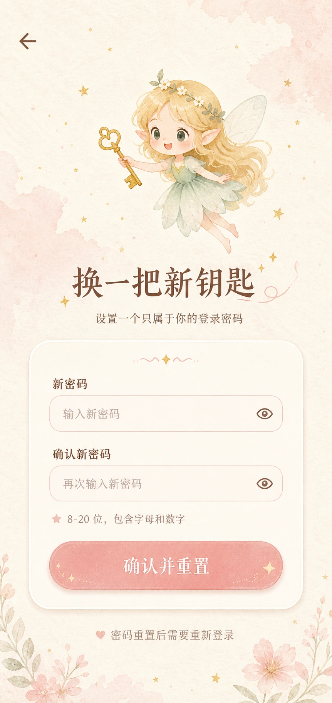
账号登录模块05-找回密码设置新密码页HTML 页面 · 可对照原稿 账号登录模块06-登录页-校验失败HTML 页面 · 可对照原稿 账号登录模块07-验证码已发送-等待验证HTML 页面 · 可对照原稿 账号登录模块08-密码重置成功HTML 页面 · 可对照原稿 账号关联模块01-建立情侣关系页HTML 页面 · 可对照原稿 账号关联模块02-分享邀请页HTML 页面 · 可对照原稿 账号关联模块03-填写邀请码页HTML 页面 · 可对照原稿 账号关联模块04-情侣关系确认页HTML 页面 · 可对照原稿 账号关联模块05-情侣绑定成功页HTML 页面 · 可对照原稿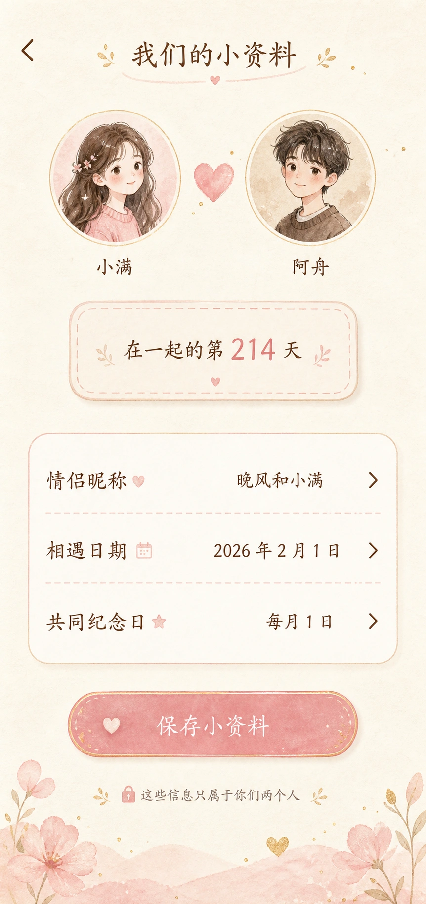
账号关联模块06-情侣信息设置页HTML 页面 · 可对照原稿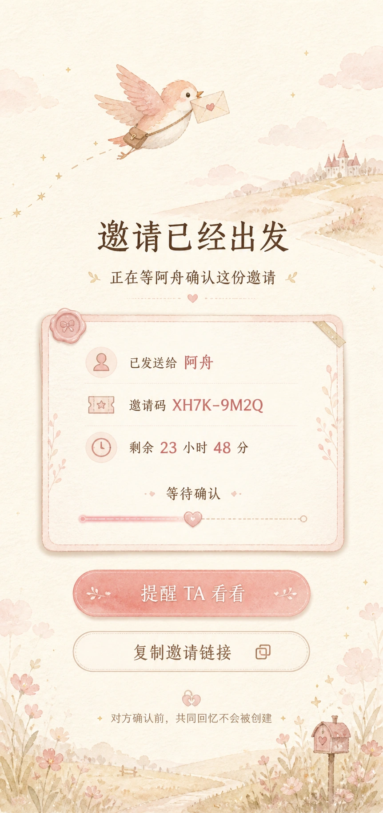
账号关联模块07-等待TA确认HTML 页面 · 可对照原稿 账号关联模块08-邀请码失效或不可用HTML 页面 · 可对照原稿 账号关联模块09-当前账号已有情侣关系HTML 页面 · 可对照原稿 童话首页模块01-首页与共同记录-无记录状态HTML 页面 · 可对照原稿 童话首页模块01-首页与共同记录-正常态HTML 页面 · 可对照原稿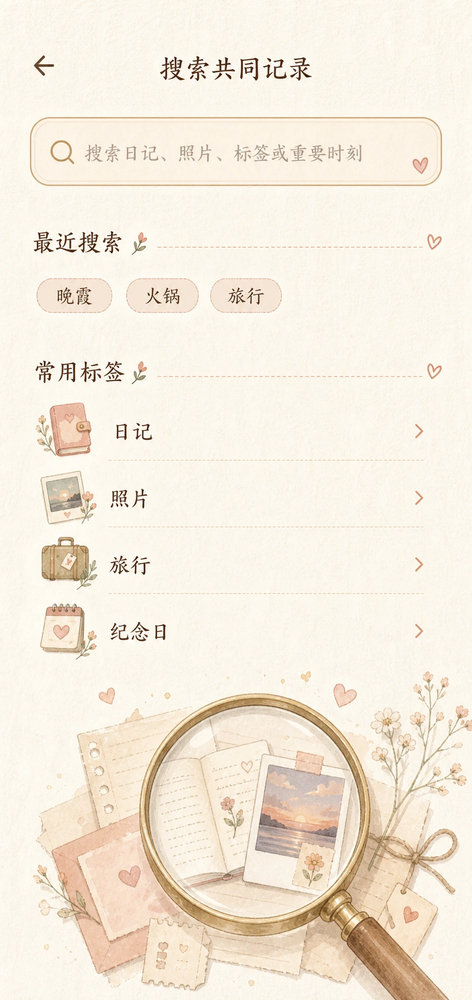
童话首页模块02-共同记录搜索页-初始状态HTML 页面 · 可对照原稿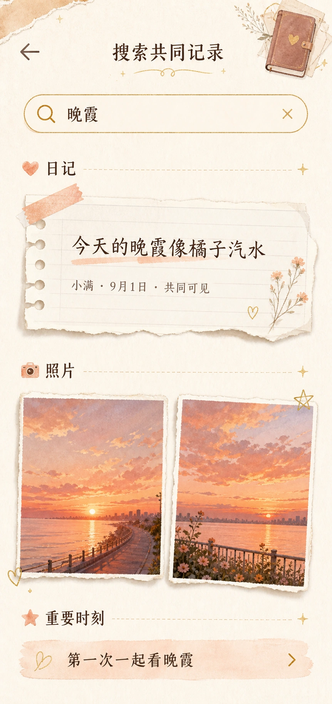
童话首页模块02-共同记录搜索页-结果状态HTML 页面 · 可对照原稿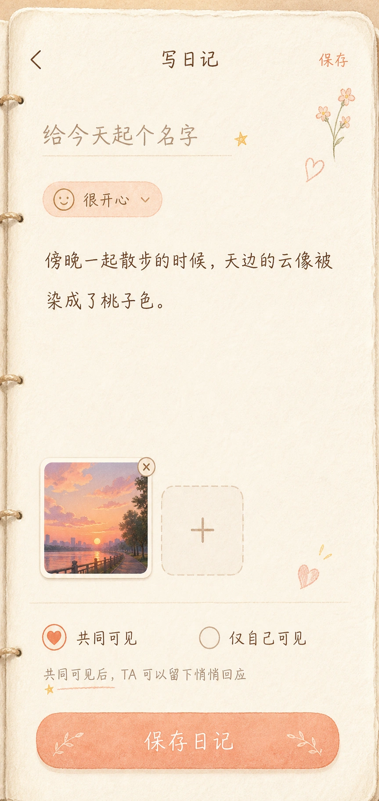
童话首页模块03-日记编辑页HTML 页面 · 可对照原稿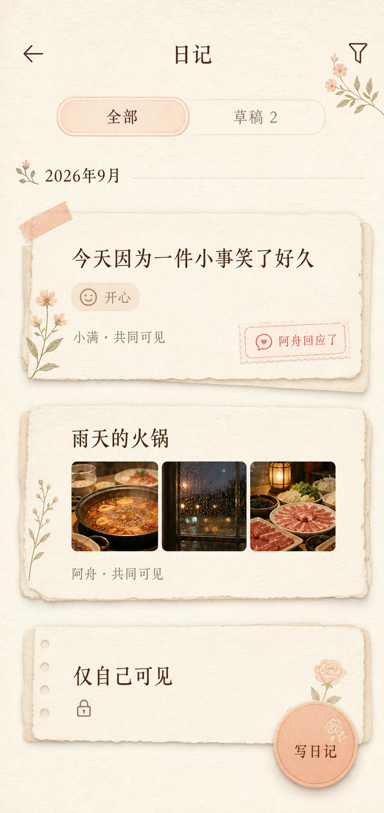
童话首页模块04-日记列表页HTML 页面 · 可对照原稿 童话首页模块05-日记详情页-仅自己可见HTML 页面 · 可对照原稿 童话首页模块05-日记详情页-共同可见HTML 页面 · 可对照原稿 童话首页模块06-照片相册页-空状态HTML 页面 · 可对照原稿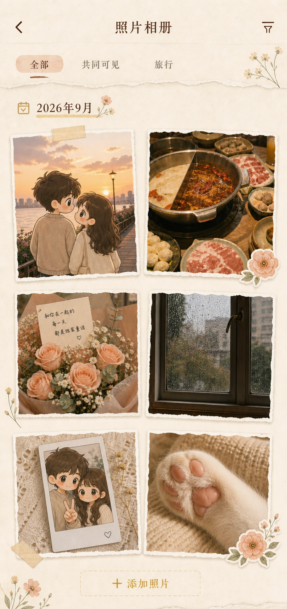
童话首页模块06-照片相册页-网格状态HTML 页面 · 可对照原稿 童话首页模块07-照片上传页HTML 页面 · 可对照原稿 童话首页模块08-照片详情页HTML 页面 · 可对照原稿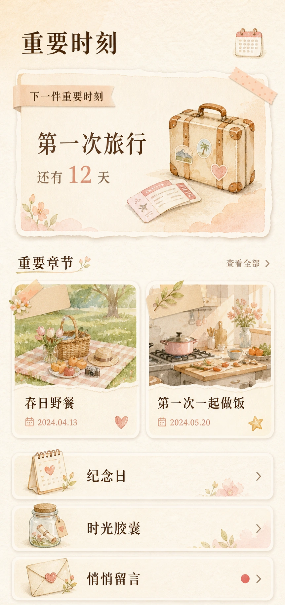
重要时刻模块01-重要时刻首页-正常态HTML 页面 · 可对照原稿 重要时刻模块01-重要时刻首页-空状态HTML 页面 · 可对照原稿 重要时刻模块02-重要时刻详情页HTML 页面 · 可对照原稿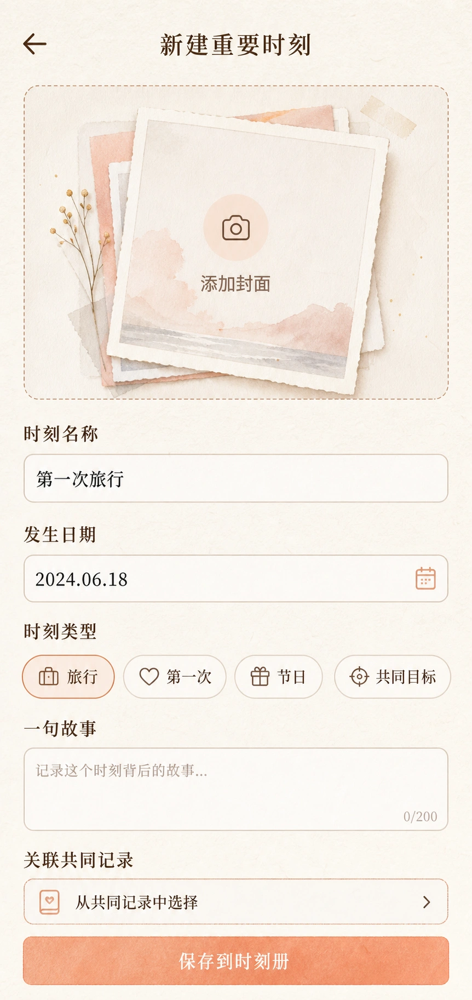
重要时刻模块03-重要时刻新建编辑页HTML 页面 · 可对照原稿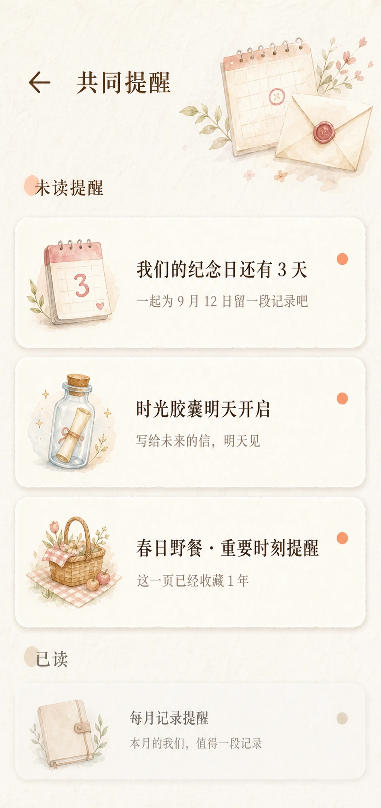
重要时刻模块04-共同提醒页-未读状态HTML 页面 · 可对照原稿 重要时刻模块04-共同提醒页-空状态HTML 页面 · 可对照原稿
重要时刻模块05-纪念日管理页-正常态HTML 页面 · 可对照原稿
重要时刻模块05-纪念日管理页-空状态HTML 页面 · 可对照原稿
重要时刻模块04-共同提醒页-空状态HTML 页面 · 可对照原稿
重要时刻模块05-纪念日管理页-正常态HTML 页面 · 可对照原稿
重要时刻模块05-纪念日管理页-空状态HTML 页面 · 可对照原稿
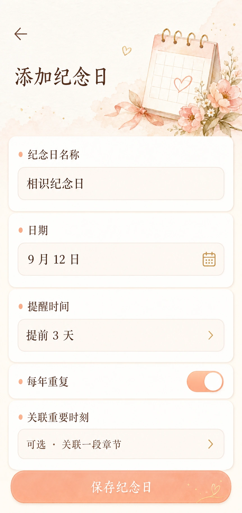
重要时刻模块06-纪念日添加编辑页HTML 页面 · 可对照原稿 重要时刻模块07-纪念日倒计时页-正常态HTML 页面 · 可对照原稿 重要时刻模块07-纪念日倒计时页-纪念日当天HTML 页面 · 可对照原稿 重要时刻模块08-时光胶囊列表页HTML 页面 · 可对照原稿
重要时刻模块08-时光胶囊列表页HTML 页面 · 可对照原稿
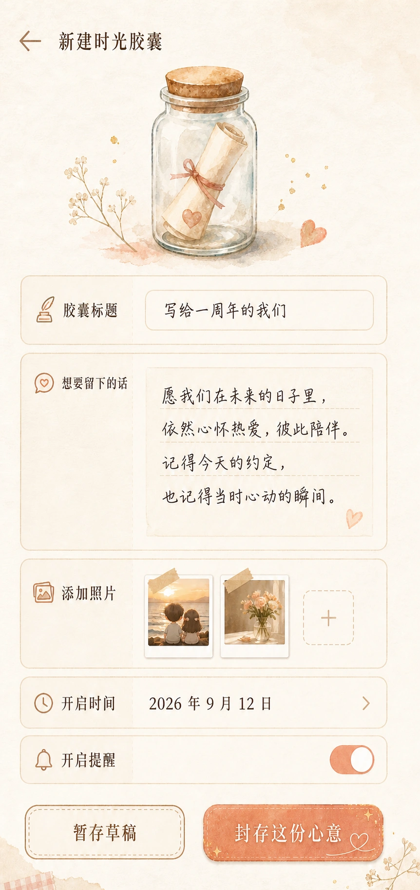
重要时刻模块09-时光胶囊编辑新建页HTML 页面 · 可对照原稿 重要时刻模块10-时光胶囊详情页-已开启HTML 页面 · 可对照原稿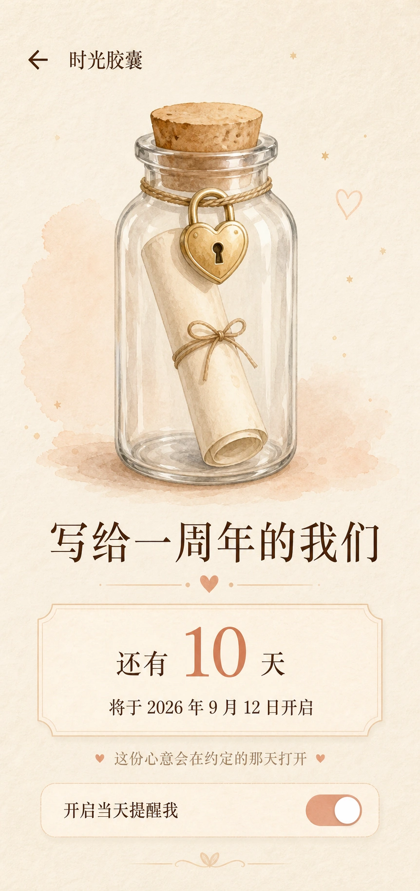
重要时刻模块10-时光胶囊详情页-未到期开启HTML 页面 · 可对照原稿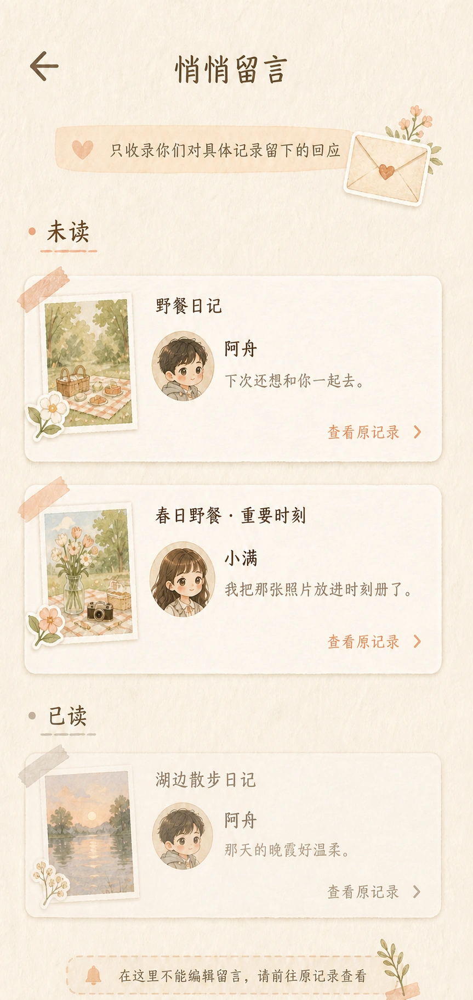
重要时刻模块11-悄悄留言列表页-正常态HTML 页面 · 可对照原稿 重要时刻模块11-悄悄留言列表页-空状态HTML 页面 · 可对照原稿 童话工坊模块01-童话工坊首页HTML 页面 · 可对照原稿 童话工坊模块02-创作素材选择页HTML 页面 · 可对照原稿
童话工坊模块02-创作素材选择页HTML 页面 · 可对照原稿
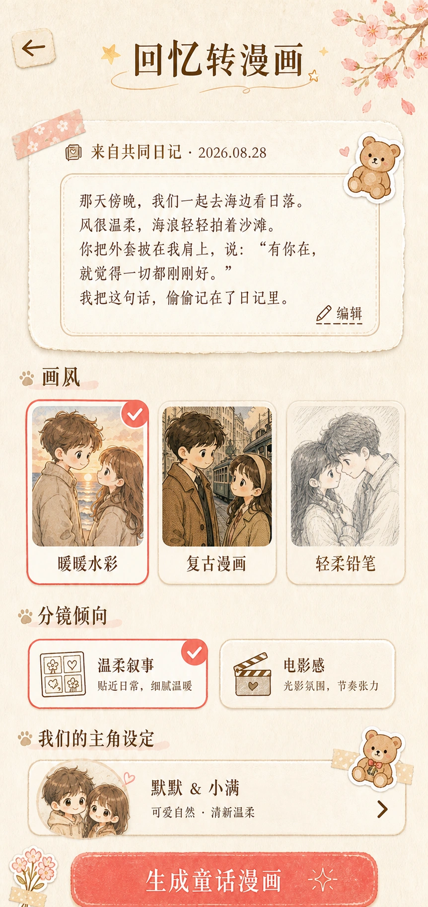
童话工坊模块03-回忆转漫画编辑页HTML 页面 · 可对照原稿 童话工坊模块04-照片转漫画编辑页HTML 页面 · 可对照原稿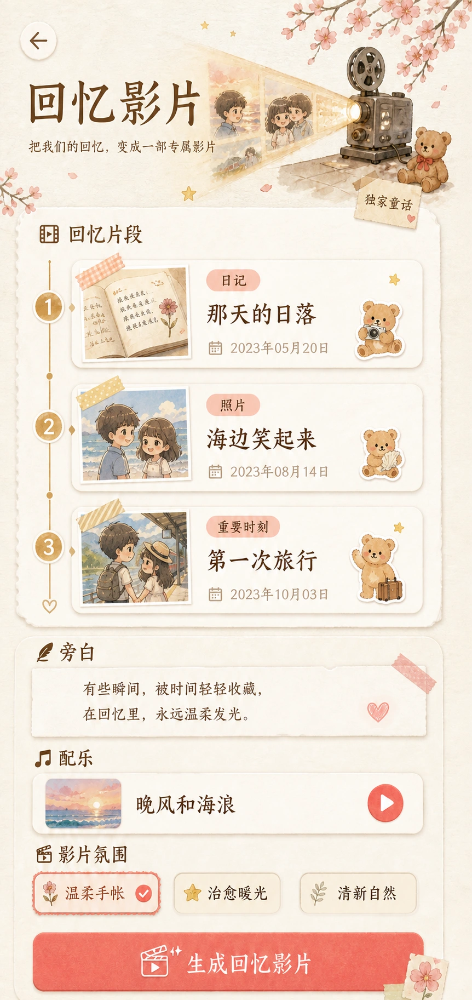
童话工坊模块05-回忆影片编辑页HTML 页面 · 可对照原稿 童话工坊模块06-魔法生成中页HTML 页面 · 可对照原稿
童话工坊模块07-生成失败页HTML 页面 · 可对照原稿
童话工坊模块08-作品详情页HTML 页面 · 可对照原稿
童话工坊模块09-我的创作页HTML 页面 · 可对照原稿
童话工坊模块10-我们的主角设定页HTML 页面 · 可对照原稿
童话工坊模块06-魔法生成中页HTML 页面 · 可对照原稿
童话工坊模块07-生成失败页HTML 页面 · 可对照原稿
童话工坊模块08-作品详情页HTML 页面 · 可对照原稿
童话工坊模块09-我的创作页HTML 页面 · 可对照原稿
童话工坊模块10-我们的主角设定页HTML 页面 · 可对照原稿
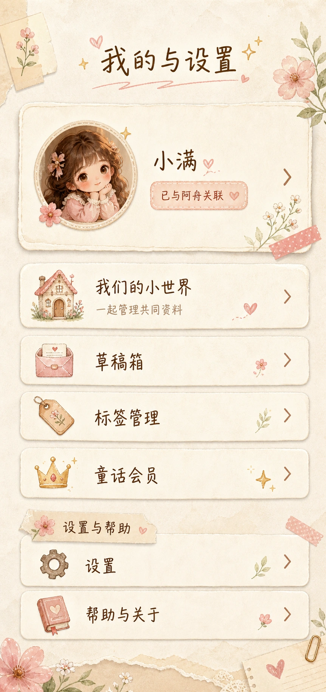
我的与设置模块01-我的与设置首页HTML 页面 · 可对照原稿 我的与设置模块02-编辑个人资料页HTML 页面 · 可对照原稿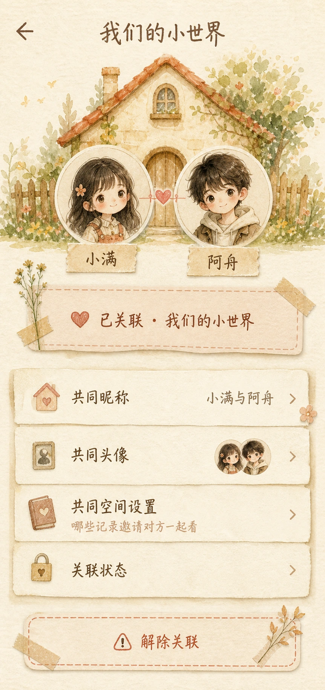
我的与设置模块03-我们的小世界页HTML 页面 · 可对照原稿 我的与设置模块04-草稿箱页HTML 页面 · 可对照原稿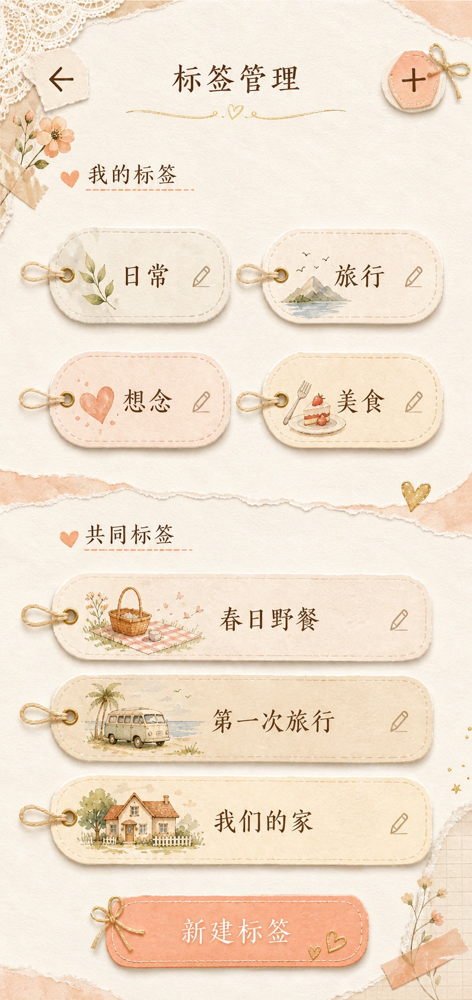
我的与设置模块05-标签管理页HTML 页面 · 可对照原稿 我的与设置模块06-童话会员页HTML 页面 · 可对照原稿
我的与设置模块06-童话会员页HTML 页面 · 可对照原稿
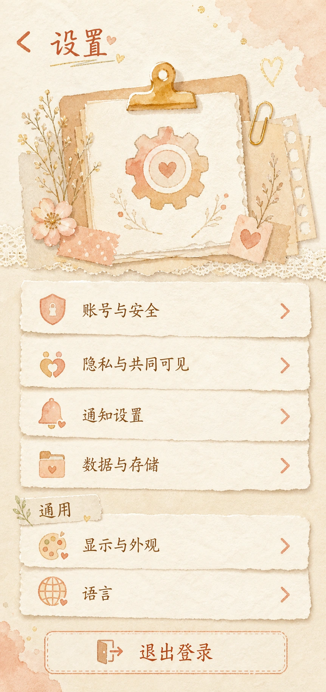
我的与设置模块07-设置首页HTML 页面 · 可对照原稿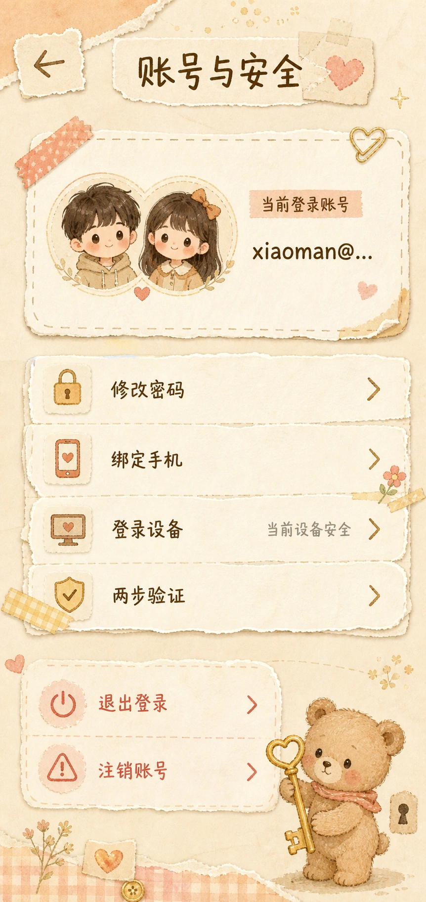
我的与设置模块08-账号与安全页HTML 页面 · 可对照原稿 我的与设置模块09-隐私与共同可见页HTML 页面 · 可对照原稿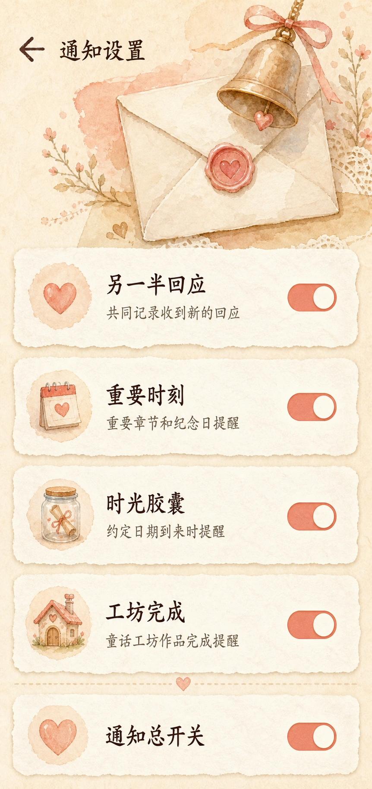
我的与设置模块10-通知设置页HTML 页面 · 可对照原稿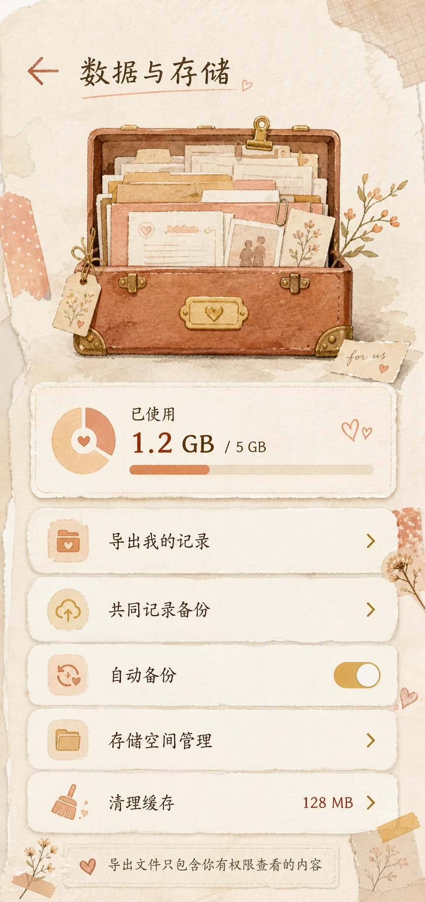
我的与设置模块11-数据与存储页HTML 页面 · 可对照原稿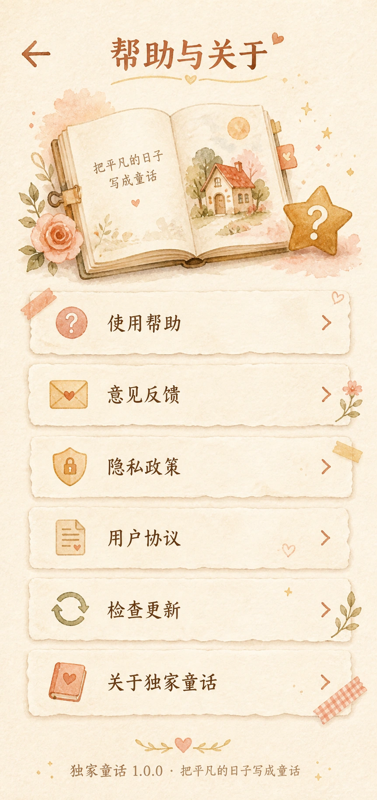
我的与设置模块12-帮助与关于页HTML 页面 · 可对照原稿 情侣宠物模块60-共同领养页-等待确认HTML 页面 · 可对照原稿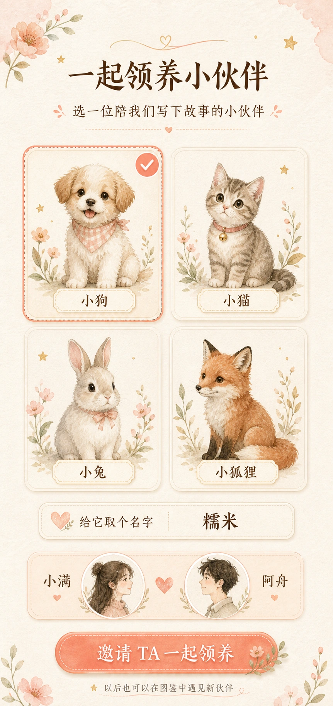
情侣宠物模块60-共同领养页-选择宠物HTML 页面 · 可对照原稿 情侣宠物模块60-宠物空间首页-正常态HTML 页面 · 可对照原稿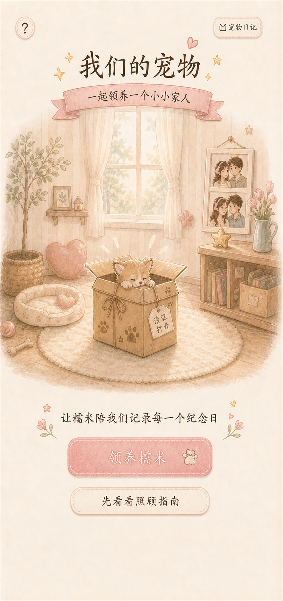
情侣宠物模块60-宠物空间首页-首次领养HTML 页面 · 可对照原稿 情侣宠物模块61-宠物互动页-互动成功HTML 页面 · 可对照原稿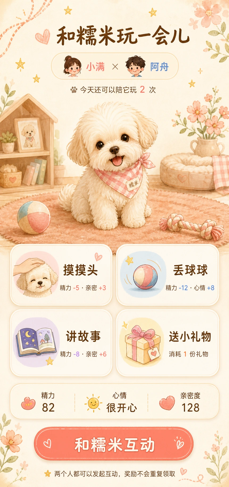
情侣宠物模块61-宠物互动页-正常态HTML 页面 · 可对照原稿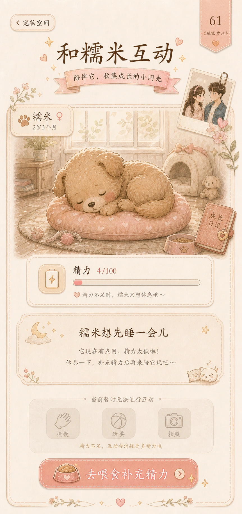
情侣宠物模块61-宠物互动页-精力不足HTML 页面 · 可对照原稿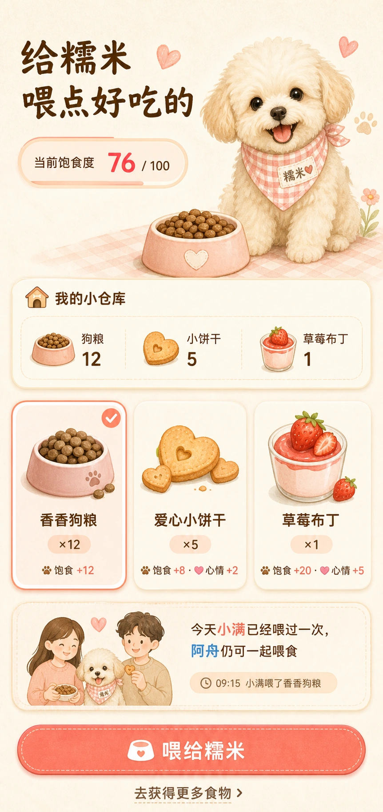
情侣宠物模块62-喂食页-正常态HTML 页面 · 可对照原稿 情侣宠物模块62-喂食页-资源不足HTML 页面 · 可对照原稿 情侣宠物模块63-任务页-奖励领取HTML 页面 · 可对照原稿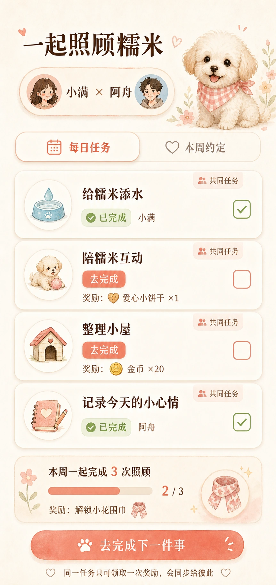
情侣宠物模块63-任务页-正常态HTML 页面 · 可对照原稿 情侣宠物模块64-宠物装扮页-正常态HTML 页面 · 可对照原稿
情侣宠物模块64-宠物装扮页-正常态HTML 页面 · 可对照原稿
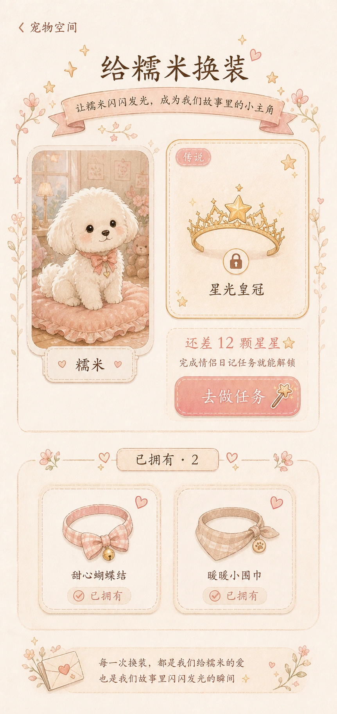
情侣宠物模块64-宠物装扮页-资源不足HTML 页面 · 可对照原稿 情侣宠物模块65-房间布置页-保存成功HTML 页面 · 可对照原稿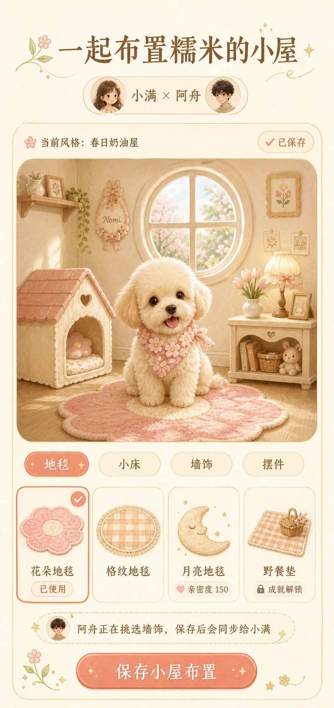
情侣宠物模块65-房间布置页-正常态HTML 页面 · 可对照原稿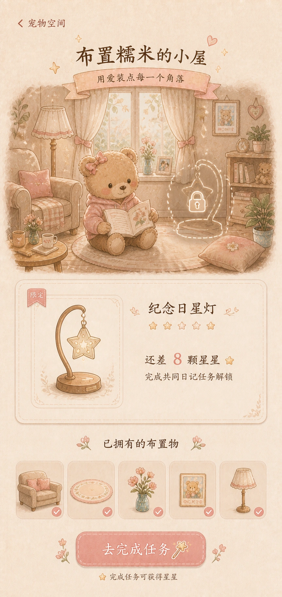
情侣宠物模块65-房间布置页-资源不足HTML 页面 · 可对照原稿 情侣宠物模块66-成长故事页-回忆权限失效HTML 页面 · 可对照原稿 情侣宠物模块66-成长故事页-正常态HTML 页面 · 可对照原稿 情侣宠物模块66-成长故事页-章节详情HTML 页面 · 可对照原稿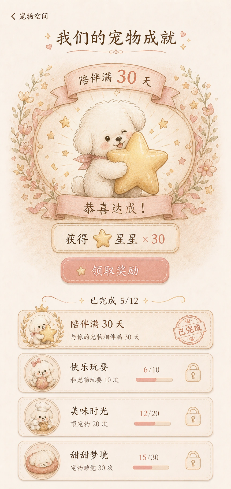
情侣宠物模块67-成就页-奖励领取HTML 页面 · 可对照原稿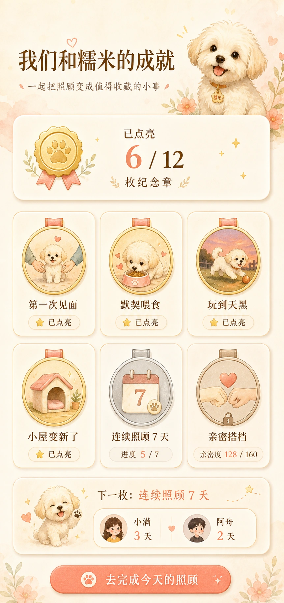
情侣宠物模块67-成就页-正常态HTML 页面 · 可对照原稿 情侣宠物模块68-宠物图鉴页-正常态HTML 页面 · 可对照原稿 情侣宠物模块68-宠物图鉴页-详情态HTML 页面 · 可对照原稿 情侣宠物模块69-宠物设置页-导出与删除确认HTML 页面 · 可对照原稿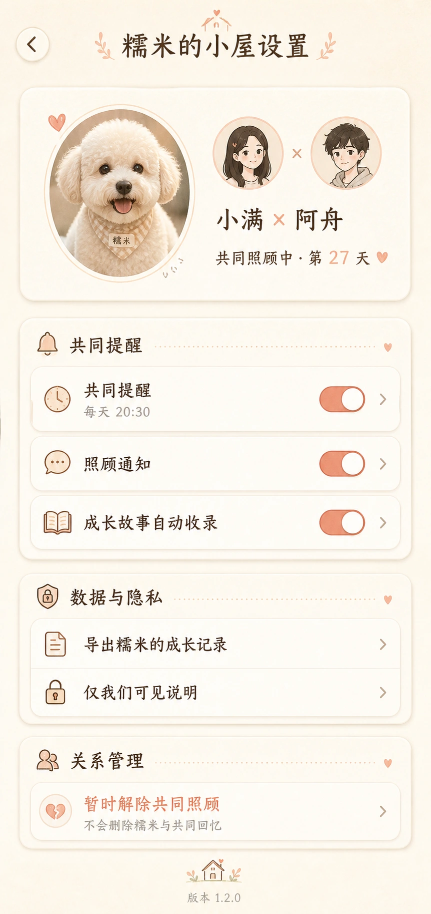
情侣宠物模块69-宠物设置页-正常态HTML 页面 · 可对照原稿 共同回忆册模块01-书架HTML 页面 · 可对照原稿
共同回忆册模块02-空书架HTML 页面 · 可对照原稿
共同回忆册模块03-本月回忆推荐HTML 页面 · 可对照原稿
共同回忆册模块01-书架HTML 页面 · 可对照原稿
共同回忆册模块02-空书架HTML 页面 · 可对照原稿
共同回忆册模块03-本月回忆推荐HTML 页面 · 可对照原稿
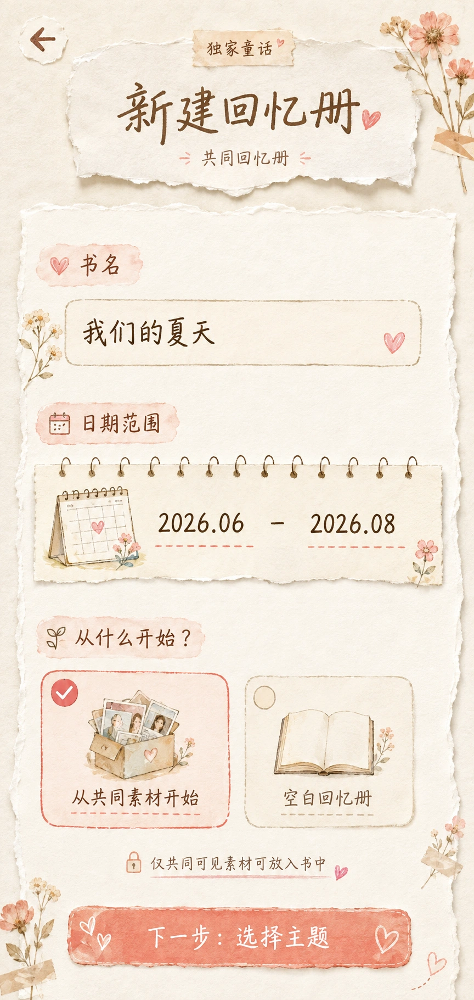
共同回忆册模块04-新建回忆册-基础信息HTML 页面 · 可对照原稿 共同回忆册模块05-主题与封面选择HTML 页面 · 可对照原稿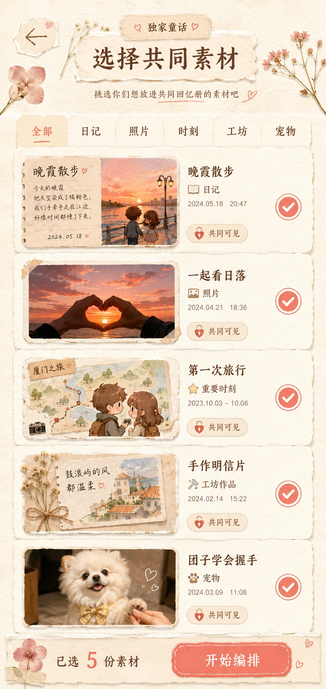
共同回忆册模块06-选择共同素材HTML 页面 · 可对照原稿 共同回忆册模块07-素材预览与确认HTML 页面 · 可对照原稿 共同回忆册模块08-选择回忆页模板HTML 页面 · 可对照原稿 共同回忆册模块09-日记摘录页编排HTML 页面 · 可对照原稿 共同回忆册模块10-照片故事页编排HTML 页面 · 可对照原稿 共同回忆册模块11-重要时刻页编排HTML 页面 · 可对照原稿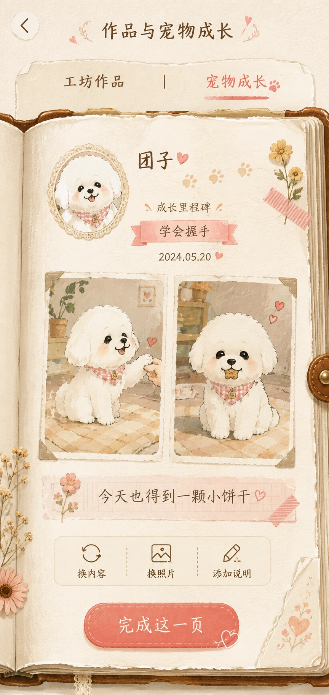
共同回忆册模块12-作品与宠物成长页编排HTML 页面 · 可对照原稿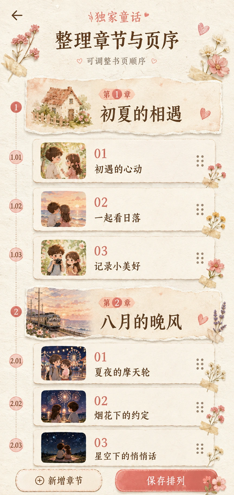
共同回忆册模块13-章节与页序整理HTML 页面 · 可对照原稿 共同回忆册模块14-建册完成HTML 页面 · 可对照原稿 共同回忆册模块15-回忆册目录HTML 页面 · 可对照原稿 共同回忆册模块16-沉浸翻阅页HTML 页面 · 可对照原稿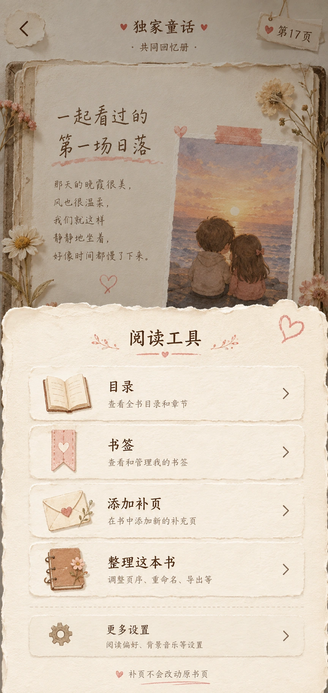
共同回忆册模块17-阅读工具菜单HTML 页面 · 可对照原稿 共同回忆册模块18-添加双人补页HTML 页面 · 可对照原稿 共同回忆册模块19-双人补页编辑HTML 页面 · 可对照原稿 共同回忆册模块20-含补页的阅读状态HTML 页面 · 可对照原稿 共同回忆册模块21-回忆册管理与删除确认HTML 页面 · 可对照原稿